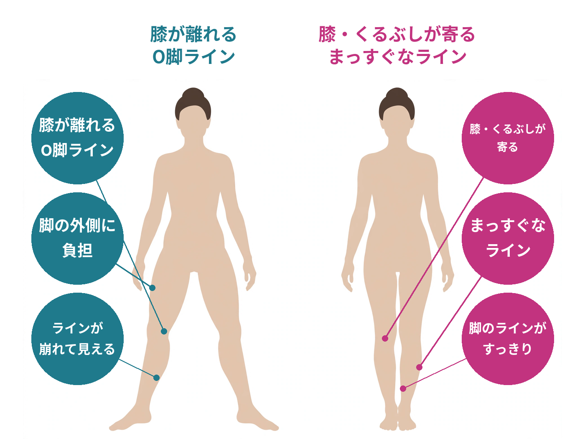

O脚・X脚の改善
美容整体ステラ・ポラリス東三国｜大阪市淀川区東三国・東三国駅徒歩5分・女性向け

脚のラインを真っ直ぐに。トレーナー視点の筋肉の使い方と骨格調整
O脚やX脚は、骨盤の傾きや股関節・膝・足首のねじれ、筋肉の使い方のクセなどが重なって見られることが多いと言われています。内ももやお尻の筋肉が使いにくく、外側ばかりに負担がかかると、脚のラインの印象にも影響します。スカートやパンツを履いたときの脚のラインが気になる、歩き方を指摘されたことがある、という方からのご相談が多いテーマです。このページでは、脚のラインの背景にある仕組みと、まっすぐに見える脚のラインを目指す当サロンでのケア、ご自宅でできるセルフケアをご案内します。まずは下のチェックで、ご自身の状態を確かめてみてください。
ご予約はこちら（Coubic）こんなお悩みありませんか
- かかとをそろえて立つと、膝の間にすき間があく
- 膝はつくのに、足首の間が離れてしまう
- スカートやパンツを履いたとき、脚のラインが気になる
- 歩き方を指摘されたことがある
- 靴底の外側ばかりが減っていく
- 内ももに力が入りにくく、外側ばかり張る感じがする
- 長く歩くと、膝や股関節まわりが重くなる
当てはまる項目が多いほど、骨盤から足首までのバランスや筋肉の使い方のクセが、脚のラインに影響している目安とされています。脚のラインは、脚だけではなく骨盤を含めた全体のバランスで決まる部分が大きいものです。次のセルフチェックで、今の脚の状態の傾向を確かめてみましょう。
簡単セルフチェック（立ち姿チェック）
鏡の前でできる、脚のバランスの傾向を知るための簡単な方法です。
- 鏡の前に立ち、かかととつま先をそろえてまっすぐ立ちます。
- 膝・ふくらはぎ・足首の3点が、左右それぞれどのようについているかを確認します。
- 膝の間にすき間がある、膝同士がぶつかって足首が離れるといった状態は、脚のバランスの偏りが出ている目安と言われています。
※これは診断ではありません。ご自身の状態の傾向を知る目安としてお使いください。
O脚・X脚の改善の原因と仕組み
骨盤・股関節・膝・足首の連動
脚のラインは、骨盤の傾きを起点に、股関節の向き、膝のねじれ、足首の角度が連動して決まります。どこか一か所の偏りが、全体のラインに影響していくのが特徴です。O脚では膝が外を向きやすく、X脚では膝が内に入りやすいといった違いがありますが、どちらも土台である骨盤と、筋肉の使い方のクセが関係していると言われています。図1のように、脚のラインは下半身全体のバランスの結果として表れます。

図1 脚のラインで起こりやすい変化と、バランスが整った脚のイメージ。脚の状態には個人差があります。
筋肉の使い方のクセ
内ももやお尻の筋肉は、脚のラインを保つうえで大切な役割を持ちます。これらが使いにくい状態では、外側の筋肉ばかりが働いて張りが強くなり、ラインの偏りが固定されやすくなります。反対に、内ももやお尻を使う感覚が戻ると、立ち姿や歩き姿の安定感も変わってきます。筋肉のバランスは、日常の体の使い方で少しずつ育てていけるものです。
歩き方と靴の影響
歩くときの足の着き方や、靴の形・ヒールの高さも、脚のラインに関わります。外側に体重がかかる歩き方が続くと、その負担のかかり方がクセとして積み重なります。靴底の減り方に偏りがある方は、歩き方のクセが出ているサインかもしれません。立ち方・歩き方の小さな見直しが、ラインづくりの土台になります。
見た目のラインと印象
脚のラインは、スカートやパンツのシルエットを大きく左右します。まっすぐに見える脚のラインは、それだけで姿勢全体が整った印象につながります。骨格そのものを変えるのではなく、筋肉のバランスと体の使い方を整えることで、ラインの印象は変えていけます。パーソナルトレーナーの視点を取り入れたケアで、見た目と動きの両面から整えていきます。
セルフケアで足りる場合・サロンケアが向く場合
ラインの偏りが軽く、立ち方や歩き方を意識することで感覚が変わる日が多い場合は、まずご自宅でのセルフケアを続けて様子を見る方法があります。一方で、外側の張りが自分ではゆるめにくい、内ももやお尻を使う感覚がつかみにくい、脚のラインの印象を本格的に整えたいという場合は、サロンでのケアが向いている目安になります。サロンでは、骨盤から足首までのバランスを確認し、固まりやすい部位をゆるめたうえで使う感覚もご案内することで、施術後に「立ち姿が変わった」「脚のラインがすっきり見える」と感じやすい状態を目指します。どちらが正解というものではなく、今の状態に合わせて選ぶことが大切です。
当サロンでのケア
当サロンの脚のラインケアは、「骨盤から足首までのバランスを整え、まっすぐに見える脚のライン」を目指す組み立てです。パーソナルトレーナーの視点も活かし、部位と目的に合わせて3つの手技を組み合わせます。
美容整体：骨盤から股関節、膝まわりのバランスを整え、脚のラインの土台をつくることを目的に進めます。
アロマオイルマッサージ：固まりやすい太ももの外側やふくらはぎをオイルでゆるめ、巡りが流れやすい状態を目指します。香りに包まれるリラックス感の高いケアです。
もみほぐし：お尻や太ももの張りやすい筋肉をほぐし、あわせて内ももやお尻を使う感覚をつかむための簡単な動きもご案内します。
ケアを通して目指すのは、こんな変化です。
- 脚のラインがまっすぐに見える印象へ
- 内ももやお尻を使う感覚がつかめ、立ち姿が安定する体感へ
- 太ももの外側の張りがゆるんで、パンツのラインがすっきり見える印象へ
- 歩き姿がきれいに見え、足運びが軽やかな感覚へ
- スカートやパンツを履くのが楽しみになるような仕上がりへ
施術後は立ち姿を鏡で確認しながら、脚のラインの印象の変化を一緒に確かめます。パーソナルトレーナーの視点から、内ももやお尻を使う感覚をつかむための簡単な動きもご案内しますので、ご自宅でのケアにもつなげていただけます。

施術の流れ
ご来店後、気になる部位やお悩み、ご希望の強さなどをうかがいます。完全個室のため、周りを気にせずお話しいただけます。
骨盤の傾きや股関節・膝・足首のバランス、立ち姿などを一緒に確認し、その日の状態に合わせた施術の進め方をご案内します。
美容整体を中心に、ご希望に応じてアロマオイルマッサージ、もみほぐしを組み合わせて進めます。強さは途中でも調整できます。
施術後の状態を確認し、ご自宅で続けやすいセルフケアのポイントをお伝えします。次回の目安についても、ご希望があればご案内します。
料金
| コース | 通常価格 | キャンペーン価格（12/25まで） |
|---|---|---|
| 80分 | 8,000円 | 3,000円 |
| 100分 | 10,000円 | 4,000円 |
| 120分 | 12,000円 | 5,000円 |
クリスマスキャンペーンは12月25日まで、ご新規様もリピーターの方も対象です。施術内容は当日の状態とご希望に合わせて組み立てます。
ご自宅でできるセルフケア
- 内ももエクササイズ：椅子に座り、膝の間にクッションやボールを挟んで10秒キープします。5回を1セットとして、1日2セットが目安です。
- 立ち姿勢の意識：かかととつま先をそろえ、内ももを軽く寄せる意識で立ちます。鏡の前で1日数回、姿勢をリセットする習慣をつけます。
- ふくらはぎのストレッチ：壁に手をつき、片足を後ろに引いてかかとを床につけたまま20〜30秒キープします。左右各2セットが目安です。
- 歩き方の見直し：かかとから着地して、つま先で地面を押す歩き方を意識します。靴底の減り方も時々チェックしてみてください。
ご自宅でのケアに：セルフケア資料ライブラリ（無料）
このお悩みに合わせたセルフケアの考え方を、無料の資料ライブラリでご紹介しています。
セルフケア資料ライブラリを開く →
受診の目安
膝の痛みや腫れ、歩行に支障がある場合は、施術の前に医療機関への受診をおすすめします。また、股関節の痛みを伴う場合も、医療機関でご相談ください。
よくある質問
Q. 初めてでも大丈夫ですか？
はい。当サロンは完全予約制・完全個室で、1日3組までのご案内です。最初にカウンセリングで脚の状態や気になる部位をうかがい、無理のない内容から始めます。施術の前後で立ち姿を鏡で確認しながら「ラインがすっきり見える」「立ち姿が変わった」といった感覚の違いを一緒に確かめますので、初めての方も安心してご利用いただけます。
Q. 施術は痛いですか？
強さは、ご希望をうかがいながら調整します。張りやすい外側の部位は最初に圧を感じることがありますが、お身体の状態に合わせた圧で丁寧に進めます。感じ方には個人差がありますので、施術中も遠慮なくお声がけください。
Q. コースはどう選べばいいですか？
80分・100分・120分のコースがあり、ケアしたい部位の広さやお時間のご都合に合わせて選べます。脚のラインのケアで骨盤から太もも、ふくらはぎまでゆっくり整えたい方には、100分が選ばれることが多いコースです。迷われる場合は、ご予約の際にお気軽にご相談ください。
Q. 場所と予約方法を教えてください。
大阪市淀川区東三国、東三国駅から徒歩5分です。完全予約制のため、予約サイト（Coubic）またはLINE公式アカウントからご予約をお願いしています。
Q. 男性も受けられますか？
当サロンは女性向けのため、男性の方は、同じ東三国の男性専用整体院「北辰堂」をご案内しています。
施術者について
平賀建人（施術歴30年）
鍼灸師・登録販売者・アロマセラピスト・パーソナルトレーナーの資格を持ち、美容整体を中心に、アロマオイルマッサージ、もみほぐしを、その日の状態とご希望に合わせて組み合わせて施術します。このページの内容は、施術者の知識と経験をもとに作成しています。

料金・ご予約
ご新規様もリピーターの方も 12/25まで
80分 3,000円／100分 4,000円／120分 5,000円
通常価格は80分8,000円／100分10,000円／120分12,000円です。施術内容はご希望に合わせて組み立てます。
営業時間：月〜土 17:00〜23:00／日 10:00〜23:00（完全予約制）｜電話：080-2468-3086
大阪府大阪市淀川区東三国2丁目25番4号101（東三国駅徒歩5分）